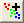

FAQ-721 グラフのデータを分類して、それぞれにカラーマップを設定するにはどうすればよいですか？
Classify-Data-from-Graph
最終更新日: 2015/8/27
データの種類によっては、グラフから分類されやすいものがあります。グラフのデータポイントを分類してカラーマップを設定するには
- グラフウィンドウをアクティブにして、メニューのガジェット: クラスター操作でグラフに関心領域(ROI)ボックスを設定し、クラスターガジェットダイアログを開きます。
- グループ化すべきデータ群だけが入るよう、ROIボックスを動かして大きさを調整します。クラスター操作のカテゴリを作成ボタン  をクリックして、Create Categorical Value ダイアログを開きます。Category Group Nameでグループ列の名前を指定し、カテゴリに識別番号を入力します。OKをクリックします。元のワークシートにグループ列が追加され、ROI内の点はCategory番号にタグ付けされます。
- データポイントが、カテゴリ番号によって異なるグループに分類されるまでステップ2を繰り返します。
- グループ列のデータポイントにカラーマップを設定するために、プロットをダブルクリックし、作図の詳細ダイアログを開きます。シンボルタブのシンボルの色で、インデックス: GroupCol を選択します。
詳細については、このチュートリアルを参照してください。
キーワード：データポイントにカラーマップを設定, データ群, データを分類
必要なOriginのバージョン: Origin 2016 SR0以降